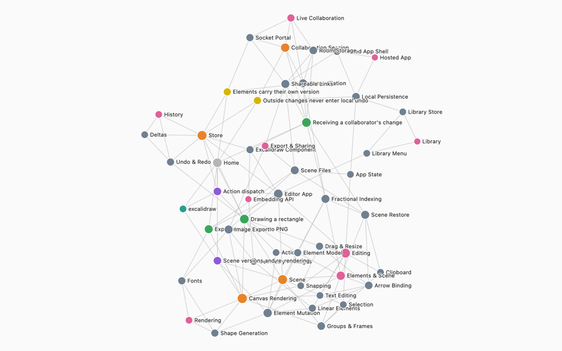
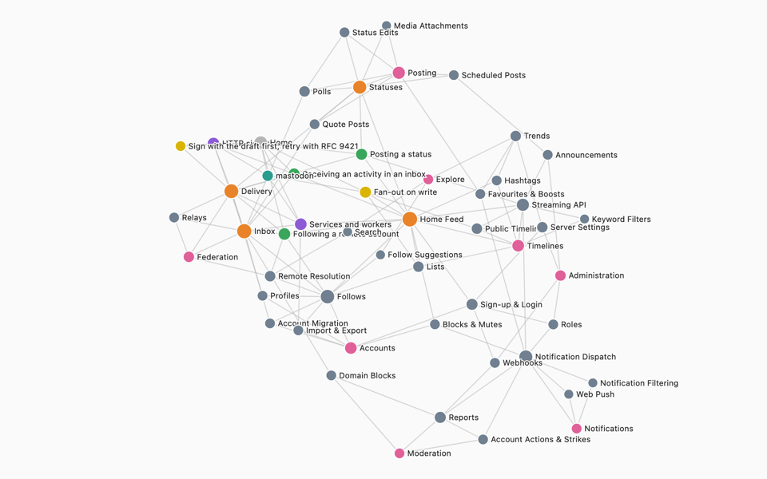
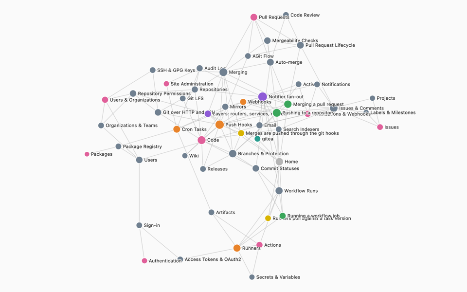
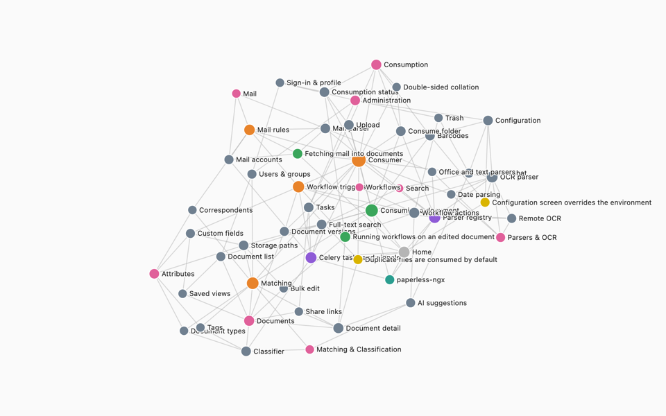
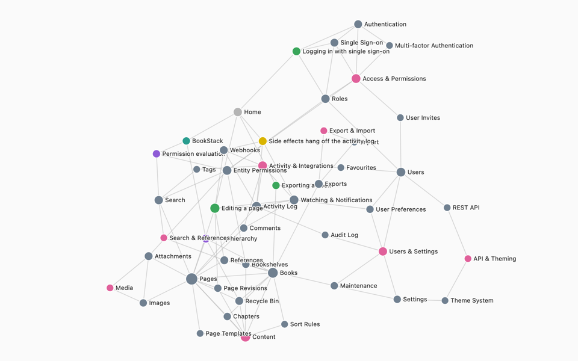

Excalidraw
TypeScript · ReactThe hand-drawn whiteboard: an embeddable React editor plus the hosted app with end-to-end encrypted live collaboration.
- 35 modules
- 9 domains
- 3 flows
- 186 reasoned links
Each map is a vault of plain markdown: the business domains, the modules inside them with the files each one owns, the journeys that cross them, and a reason on every link. Click a dot to read its note. Hover a line to see why two things connect.
Seeded by Claude from each app's code, the way /vault:seed does it, then checked by script: every file path exists at the pinned commit, and every function or class a note names was found in the code. Most modules are stubs on purpose. A team fills them in as it works.

The hand-drawn whiteboard: an embeddable React editor plus the hosted app with end-to-end encrypted live collaboration.

A federated social network server: posting, timelines, notifications and ActivityPub federation.

Self-hosted git: repositories, pull requests, packages and Actions CI, from the HTTP routers down to the models.

A self-hosted document archive: scans, PDFs, office files and mail are OCRed, tagged, filed and made searchable.

A self-hosted wiki organised as shelves, books, chapters and pages.
An Obsidian-compatible folder of markdown, shared across branches, worktrees and every repo a system spans.
A hook points the agent at the note that owns the file it is about to change, Gotchas first.
If the code moved and the map didn't, the Stop hook names the exact notes that are now out of date.
Inside Claude Code. Python 3.9+, no other dependencies. Full setup in the README.
/plugin marketplace add Light5566/claude-vault /plugin install vault@claude-vault /vault:init ~/vaults/myapp --name "My App" --repo ~/code/myapp --install-cli --git-hook /vault:seed